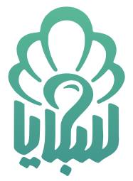
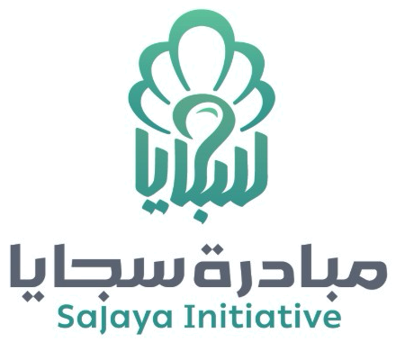
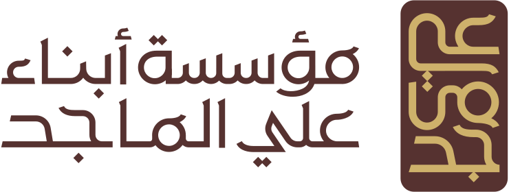
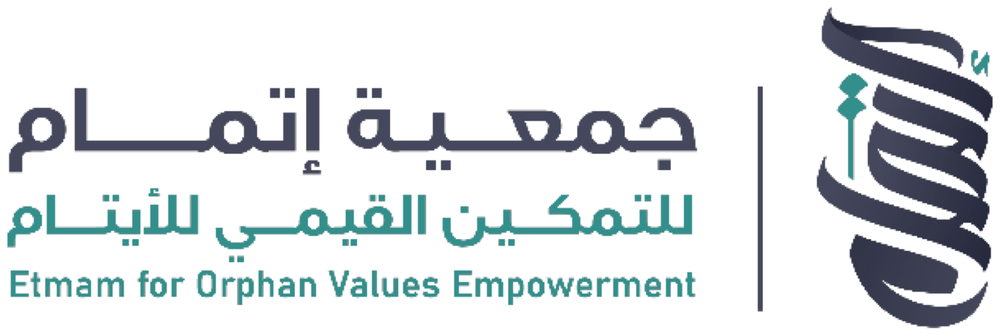

٠١
قيمنا الأصيلة
تعزيز القيم الإسلامية والأخلاقية وتحويلها إلى ممارسات سلوكية يعيشها الأبناء والبنات في حياتهم اليومية.
- الصدق
- الرحمة
- الأمانة
- الاحترام
كاللؤلؤة التي تتشكّل في الأعماق وتزداد قيمةً مع الزمن.. منصة رقمية موحّدة تدير رحلة «سجايا» من تسجيل الجمعيات واستقبال المبادرات وتقييمها، إلى متابعة التنفيذ وقياس الأثر وتكريم المتميزين.

تنفيذ
قيمٌ تُنظم في شخصية اليتيم كما تُنظم اللآلئ في العِقد
«سجايا» مبادرة وطنية تنافسية تستهدف جمعيات رعاية الأيتام، وتهدف إلى تمكينها من تصميم وتنفيذ برامج نوعية تعزز القيم الأصيلة، وترسخ السجايا الحميدة، وتنمي المهارات الشخصية لدى الأيتام من الأبناء والبنات في المرحلة المتوسطة.
رُسمت كلمة «سجايا» في ارتباط مع رمز اللؤلؤة؛ لما ترمز له من نقاء الجوهر وأصالة القيمة والجمال الكامن في الداخل، بعيدًا عن المظاهر الخارجية.
— من فلسفة الهوية البصرية للمبادرةمن تصميم وتنفيذ برامج قيمية نوعية وفق معايير واضحة.
تحويل القيم الإسلامية والأخلاقية إلى ممارسات يومية.
متابعة التنفيذ وقياس النتائج بمؤشرات وبيانات واضحة.
إبراز الجمعيات المتميزة وتجاربها في الملتقى الختامي.
تتكامل المجالات لبناء شخصية اليتيم قيميًا واجتماعيًا ومهاريًا، كطبقات اللؤلؤة التي تصنع بريقها.
تعزيز القيم الإسلامية والأخلاقية وتحويلها إلى ممارسات سلوكية يعيشها الأبناء والبنات في حياتهم اليومية.
ترسيخ السجايا الأصيلة والموروث الاجتماعي السعودي؛ «علوم الرجال» للأبناء، و«بناتنا السنعات» للبنات.
تنمية المهارات الشخصية والقيادية والقدرات الذاتية التي تصنع شخصية واثقة ومبادِرة ومؤثرة.
تعرف كل جمعية موقعها الحالي والمطلوب منها في كل مرحلة، بمواعيد واضحة ومتابعة لحظية.
كل ما تحتاجه جمعيتك لإعداد وثيقة المبادرة: المجالات، ومتطلبات الجاهزية، ومصفوفة معايير تقييم الوثائق والتنفيذ.



سجّل بيانات الجمعية وممثلها، وسيصلك رابط تفعيل الحساب لتبدأ متابعة المراحل ورفع المتطلبات.